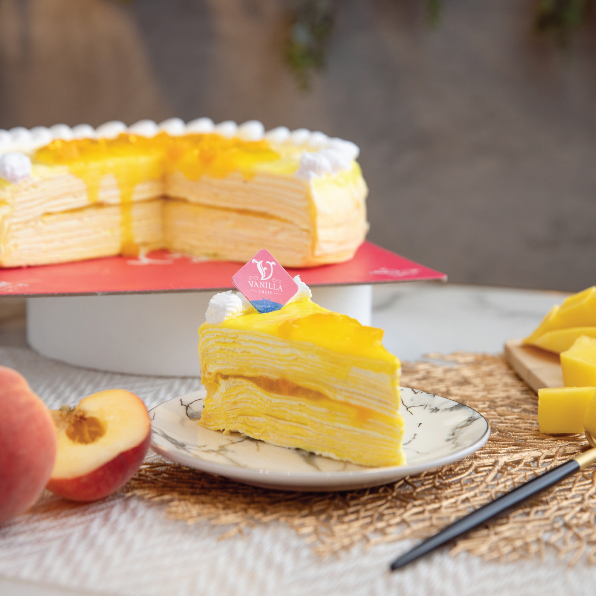

THE ART OF A LITTLE INDULGENCE
Layers made
for sharing.
Thirty delicate crepes. Silky cream. One very good reason to gather around the table.
✶Made fresh in Malaysia
JAKIM halal certified
JAKIM halal certified
30delicate
layers
layers
A moment worth making room for ✶
THE SIGNATURE MILLE CREPE | SINCE 2011
01 - THE VANILLA EDITSCROLL TO EXPLORE ↓
MADE BY HAND, WITH LOVE
Every layer tells a story. Every slice makes a moment.Get to know us ↗Timeless favourites.
Explore Vanilla’s classic mille crepe flavours.
Explore classics →02 / SOMETHING SPECIALA little more indulgence.
Meet the premium cake collection.
Explore premium →Made with
a little mischief ♥
a little mischief ♥
OUR LITTLE SECRET
Thirty layers.
One big feeling.
Inspired by a French recipe and lovingly made in Malaysia, Vanilla Crepe has grown from a local passion into a much-loved mille crepe cake brand.
Discover our story ↗ GOOD THINGS, DELIVERED
A little joy, to your door.
Order for delivery across Kuala Lumpur and Selangor. Same-day delivery is listed for orders before 12pm; confirm availability with the team.
How delivery works ↗
YOUR NEXT GATHERING STARTS HERE